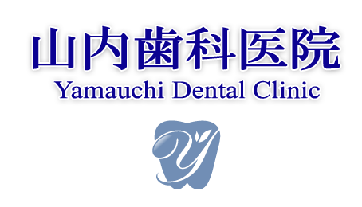
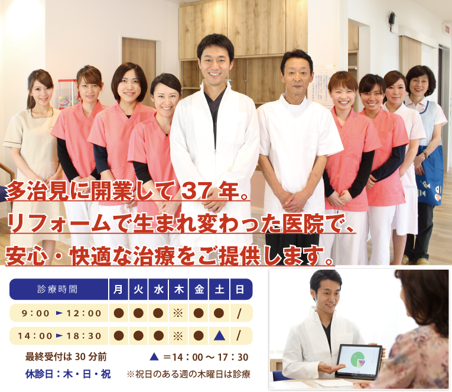

◆多治見駅徒歩10分。国道19号線・県道15号線沿い。弁天町交差点すぐ。


◆多治見駅徒歩10分。国道19号線・県道15号線沿い。弁天町交差点すぐ。
山内歯科医院では、多治見に居ながら名古屋と同等の治療が受けられる医院を目指しています。
当医院の院長はインプラントに特化した医院で長年経験を積み、治療に必要な口腔外科や麻酔などの技術・知識を修得。
さらに、治療の際に必要となるCTなどの設備も、リニューアルを機に全て取り入れるなど、設備面の充実にも取り組みました。
治療室やオペ室は治療に集中できるよう、全て完全個室にするなど、落ち着いた環境で治療に集中して頂ける環境も整備いたしました。
山内歯科医院では、治療前に患者様のお悩み事やご要望、治療にあたっての不安、気になる事など、詳細を伺ってから治療を開始する事を心がけています。
そして、こちらの治療計画や料金などを全てをお伝えし、ご納得を頂いた上で治療に入ります。
カウンセリングを徹底する事で、患者様に納得度と満足度の高い治療が提供できると考えております。
お話はプライバシーに配慮し、完全個室のカウンセリングルームにてお伺いします。
当院では、治療技術の研鑽に努める一方で、治療後も良い口腔環境を維持するための予防歯科に最も力を入れています。
むし歯や歯周病は、毎日丁寧に歯磨きをしていても、残念ながら完全に防げるわけではありません。
数ヶ月に一度の、プロによるメンテナンスを受けていただく事が大切です。
このように、痛くなってから行くのではなく、痛くなる前に通う医院作りを目指しています。
当院は、開業以来ご家族連れでのご来院が多い事から、多くのご年代の方に通って頂ける環境づくりも行っています。
2017年にリフォームをした際、入り口はバリアフリーのスロープをご用意しております。
受付から待合室の空間は明るく開放的で、暖かな空間になるように設計からこだわりました。
小さいお子様がいらっしゃるご家庭には、保育士のいるキッズルームがございます。親御さんが治療中の間も安心してお預けください。
山内歯科医院では、多治見に居ながら名古屋と同等の治療が受けられる医院を目指しています。
当医院の院長はインプラントに特化した医院で長年経験を積み、治療に必要な口腔外科や麻酔などの技術・知識を修得。
さらに、治療の際に必要となるCTなどの設備も、リニューアルを機に全て取り入れるなど、設備面の充実にも取り組みました。
治療室やオペ室は治療に集中できるよう、全て完全個室にするなど、落ち着いた環境で治療に集中して頂ける環境も整備いたしました。
山内歯科医院では、治療前に患者様のお悩み事やご要望、治療にあたっての不安、気になる事など、詳細を伺ってから治療を開始する事を心がけています。
そして、こちらの治療計画や料金などを全てをお伝えし、ご納得を頂いた上で治療に入ります。
カウンセリングを徹底する事で、患者様に納得度と満足度の高い治療が提供できると考えております。
お話はプライバシーに配慮し、完全個室のカウンセリングルームにてお伺いします。
当院では、治療技術の研鑽に努める一方で、治療後も良い口腔環境を維持するための予防歯科に最も力を入れています。
むし歯や歯周病は、毎日丁寧に歯磨きをしていても、残念ながら完全に防げるわけではありません。
数ヶ月に一度の、プロによるメンテナンスを受けていただく事が大切です。
このように、痛くなってから行くのではなく、痛くなる前に通う医院作りを目指しています。
当院は、開業以来ご家族連れでのご来院が多い事から、多くのご年代の方に通って頂ける環境づくりも行っています。
2017年にリフォームをした際、入り口はバリアフリーのスロープをご用意しております。
受付から待合室の空間は明るく開放的で、暖かな空間になるように設計からこだわりました。
小さいお子様がいらっしゃるご家庭には、保育士のいるキッズルームがございます。親御さんが治療中の間も安心してお預けください。
当院では患者様にリラックスして治療に集中して頂けるよう、
院内の設備や空間作りにも力を入れています。
当院では患者様にリラックスして治療に集中して頂けるよう、院内の設備や空間作りにも力を入れています。
予防歯科以外にも、様々な症例に対応いたします。
お口のお悩みがございましたら何でもご相談ください。
できる限り負担が少なく、歯を残す治療を目指しています。歯が痛くなったら放置せず、 早めに通院しましょう。
痛くなってからではなく、痛くなる前に通う予防歯科。生涯自分の歯で過ごすための習慣を整えましょう。
歯を失った後、その失われた歯を補う治療法で人工の歯を埋め込む治療です。症例実績の豊富な歯科医師が治療をいたします。
虫歯が一本もないころから診療を開始し、親御さんと一緒にお子さまの健康で丈夫な歯を育てましょう。
きれいな歯並びは自信につながるだけでなく、虫歯・歯周病の予防にも繋がります。お子様の歯並びもご相談ください。
成人８割が歯周病と言われています。口臭や出血などは歯周病かもしれません。早目の通院をお奨めします。
お口にぴったりと合う入れ歯で毎日の食事をより美味しく楽しくしましょう。入れ歯が合わない方もご相談ください。
親知らず抜歯、顎関節症などの外科治療にも対応しています。口腔外科出身の歯科医師が治療いたします。
詰め物、被せものを天然の歯に近い素材の物にすることで、自然な見た目にする事ができます。銀歯が気になる方もご相談ください。
白い歯はあなたの自信と笑顔につながります。ご家庭で手軽にできるホワイトニングをご提供いたします。
※一部の診療につきましては保険適用外になる物もございます。
詳細につきましては、医院までお問い合わせください。
| 医院名 | 山内歯科医院 (ヤマウチシカイイン) |
| 住所 | 〒507-0028 岐阜県多治見市弁天町2-29 |
| 診療時間 | 午前： 9:00～12:30 午後：14:00～18:30 ※土曜日は17:30まで |
| 休診日 | 木曜日・日曜日・祝日 ※祝日のある週の木曜日は診療 |
| 電話番号 | 0572-22-0886 |
| 医院名 | 山内歯科医院 (ヤマウチシカイイン) |
| 住所 | 〒507-0028 岐阜県多治見市弁天町2-29 |
| 診療時間 | 午前： 9:00～12:30 午後：14:00～18:30 ※土曜日は17:30まで |
| 休診日 | 木曜日・日曜日・祝日 ※祝日のある週の木曜日は診療 |
| 電話番号 | 0572-22-0886 |
Copyright © 2019 YAMAUCHI Dental Clinic All Right Reserved.